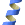
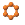

|
|
Main Window — Representation Toolbar |
This toolbar provides tools for changing the representation of atoms, bonds, and ribbons, including both shape and color. The shape or style features on the toolbar are available in the Molecular Representation panel and the Ribbons panel; the color features are available in the Atom and Bond Coloring panel. There are no main menu items corresponding exactly to these buttons.
|  | Ribbon Show, hide, or color ribbons. This button has a menu from which you can choose to display ribbons for all, selected, or displayed residues; delete ribbons; and display various combinations of atoms that are associated with the ribbons. You can also choose various coloring schemes for the ribbons. Click to pick residues for display of ribbons. Double-click to display ribbons for the selected atoms, or for all atoms if no atoms are selected. |
 |
Wire Draw bonds in wire frame representation. This button has a menu from which you can select a structural unit to use when picking atoms to display in wire representation, select a category of atoms to apply the representation to, or click Select to open the Atom Selection dialog box to select the atoms. If you choose a structural unit, click on an atom to display the bonds of that unit in wire representation. Double-click this button to apply the representation to the selected bonds, or to all bonds if no bonds are selected. |
 |
Tube Draw bonds in thin tube representation. This button has a menu from which you can select a structural unit to use when picking atoms to display in thin tube representation, select a category of atoms to apply the representation to, or click Select to open the Atom Selection dialog box to select the atoms. If you choose a structural unit, click on an atom to display the bonds of that unit in wire representation. Double-click this button to apply the representation to the selected bonds, or to all bonds if no bonds are selected. |
 |
Tube Draw bonds in tube representation. This button has a menu from which you can select a structural unit to use when picking atoms to display in tube representation, select a category of atoms to apply the representation to, or click Select to open the Atom Selection dialog box to select the atoms. If you choose a structural unit, click on an atom to display the bonds of that unit in wire representation. Double-click this button to apply the representation to the selected bonds, or to all bonds if no bonds are selected. |
|  | Ball & Stick Draw atoms and bonds in ball-and-stick representation. This button has a menu from which you can select a structural unit to use when picking atoms to display in ball-and-stick representation, select a category of atoms to apply the representation to, or click Select to open the Atom Selection dialog box to select the atoms. If you choose a structural unit, click on an atom to display the bonds of that unit in wire representation. Double-click this button to apply the representation to the selected bonds, or to all bonds if no bonds are selected. |
| CPK Draw atoms in CPK representation. This button has a menu from which you can select a structural unit to use when picking atoms to display in CPK representation, select a category of atoms to apply the representation to, or click Select to open the Atom Selection dialog box to select the atoms. If you choose a structural unit, click on an atom to display the bonds of that unit in wire representation. Double-click this button to apply the representation to the selected bonds, or to all bonds if no bonds are selected. |
|
 |
Color Scheme Color all atoms with a chosen color scheme. This button has a menu from which you can choose the scheme, as defined in the Color Schemes tab of the Atom and Bond Coloring panel. The custom color schemes for carbon atoms and ligands are on a submenu. |
| Color Color residues with a constant color. This button has a menu from which you can choose the color. The color choice is persistent. You can then pick residues to apply the color, or double-click the button to apply the color to all atoms. |
|